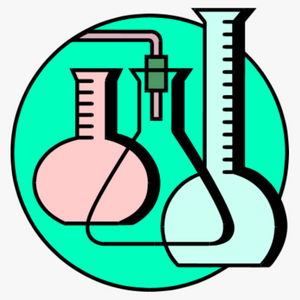
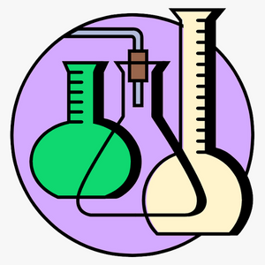
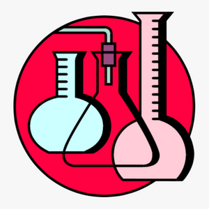
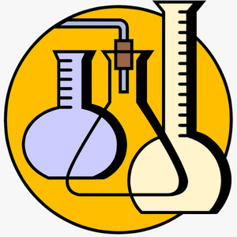

جميع التجارب الافتراضية لمناهج الكيمياء مشروحة أدناه
crocodile chemistry تمت محاكاة التجارب الافتراضية عن طريق

كيف تؤثر السوائل المختلفة في سرعة كرة تتحرك فيها
في هذه الصفحة يوجد شرح كيفية التعامل مع المختبر الافتراضي من خلال شرح احدى تجارب كيمياء ٣
اقرأ المزيد →

أثر التراكيز على سرعة التفاعل
في هذه التجربة ستتعرف على أهمية التراكيز في حياتنا اليومية وسرعة التفاعل
اقرأ المزيد →

تفاعل حمض الكلور مع الصوديوم
في هذه التجربة ستتعرف على تفاصيل تفاعل حمض الكلور مع الصوديوم ما ينتج عنه
اقرأ المزيد →

التفاعلات الطاردة والماصة للحرارة
في هذه التجربة ستدرس الفرق بين التفاعل الطارد والماص
اقرأ المزيد →
ارتفاع درجة الغليان وانخفاض درجة التجمد
في هذه التجربة ستتعرف على كل من درجة الغليان ودرجة التجمد
اقرأ المزيد →
اثر مساحة سطح المادة على سرعة التفاعل
في هذه التجربة سوف تدرس العلاقة بين مساحة سطح المادة وسرعة التفاعل
اقرأ المزيد →